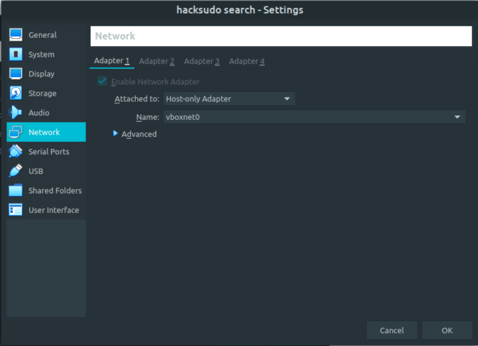
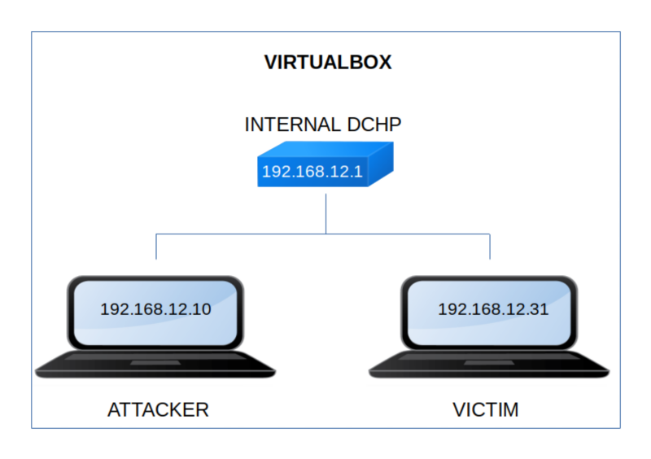

Hacksudo: Share
▸ Hacksudo: Share
▸ 1. Scan Network
▸ 2. Finding Services and Ports
▸ 3. Enumerate
▸ 3.1 Scan the website with nikto
▸ 3.2 Webserver with Gobuster
▸ 3.3 Fuzzing
▸ 4. Explotiation
▸ 4.1 Finding username with a password
▸ 4.2 Connecting via SSH (First flag)
▸ 5. Privilege Escalation (Second flag)
Difficulty: Easy.
Flag: 2 flags.
Learning:
• Reconnaissance
Scan Network
Find services
• Enumerate
Scan a webseite with Nikto
Scan a webserver with Gobuster
Fuzz URL parameters
• Exploitation
Find username from a password with Hydra
Connect via SSH
• Privilege Escalation
Check SUID binaries
Create a bash file
Run a SUID file
• Download (Mirror): https://download.vulnhub.com/hacksudo/hacksudo-search.zip
• Download (Torrent): https://download.vulnhub.com/hacksudo/hacksudo-search.zip.torrent
Install the machine on VirtualBox:
1. Download the file and extract it.
2. On Virtualbox choose File->Import Appliance.
3. Select the file “ova”.
4. Accept to import.


Watch your Machine IP.
$ ifconfig
Output:

Diagram
